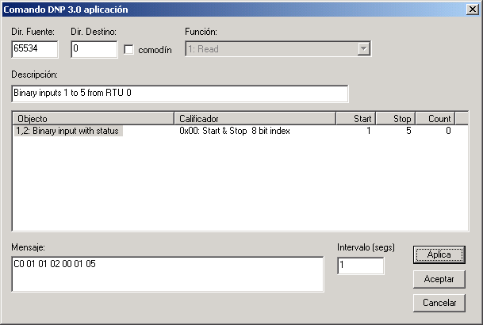
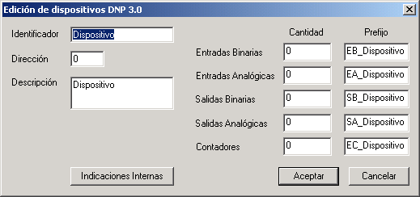

CommSet Tutorial
En esta guía rápida se demuestran de manera práctica las principales funciones de CommSet. Si usted ya compró CommSet puede usar esta guía para aprender a usarlo rápidamente. Si no ha comprado CommSet aún, puede obtener la versión de demostración y conocer la funcionalidad del programa.
Downloading and installing CommSet
Download CommSet installer from CommSet_228.exe, it is a 4.22 MB file.
Run the downloaded file to install CommSet. Clicking on the next button in every window installs CommSet files at C:\CommSet, places a shortcut on you desktop and adds a new entry in your programs menu.
Running CommSet
This tutorial is based in the demo version of CommSet, if you have already purchased CommSet please remove the USB key from your computer before running CommSet.
Run CommSet either by double clicking the shortcut in the desktop or by selecting CommSet in your programs menu (Start-Programs-CommSet).
When CommSet starts and does not find the USB key, it runs in demo mode. The following screen appears indicating that you are in demo mode.
In this mode, the serial port is not used and the bytes from port 1 are internally sent to port 2 and vice versa.
Press the button to dismiss de dialog.
Configuration Window
Cuando CommSet inicia, despliega la ventana de configuración. Contiene inicialmente la configuración de un canal en modo maestro con protocolo DNP 3.0.
El icono del fólder corresponde al canal. En el siguiente nivel, abajo del fólder, aparecen cinco íconos.
- Modo maestro DNP 3.0
- DNP 3.0 Aplicación
- DNP 3.0 Transporte
- DNP 3.0 Enlace
- Modo maestro DNP 3.0 Enlace
- Puerto
Bajo los íconos de la capa de aplicación, capa de transporte, capa de enlace y protocolo, aparece el icono Histórico . Desde aquí podemos abrir las ventanas del histórico de mensajes para cada una de las capas del protocolo.
Bajo el icono del Modo maestro DNP 3.0 aparece el icono Disp0 que corresponde con un dispositivo o Unidad Terminal Remota, el cual a su vez contiene dos íconos, el de Puntos y el de Controles .
Creando nuevos comandos
La ventana para crear nuevos comandos se abre desde la ventana de configuración haciendo doble clic sobre el icono de Modo maestro DNP 3.0 . Al hacerlo aparece la ventana de modo maestro.
Esta ventana muestra los comandos configurados. Inicialmente contiene un solo comando.
Al presionar el botón derecho del mouse sobre cualquier área de esta ventana aparece el menú flotante.
Presione el botón derecho del mouse sobre el área libre de esta ventana y seleccione la opción Nuevo comando. Aparecerá la siguiente ventana.
Los campos Dir. Fuente y Dir. Destino contienen respectivamente las direcciones fuente y destino del mensaje. Deje estos campos con los valores que tienen en este momento.
El campo Función contiene todos los códigos de función implementados, observe las opciones disponibles en este campo y seleccione la función 1: Read.
Ahora es necesario agregar los objetos para este mensaje.
Presione el botón derecho del mouse sobre el campo de objetos para que aparezca el menú flotante y seleccione la opción Nuevo objeto. CommSet presenta la siguiente ventana para seleccionar el objeto, calificador y rango.
Observe las opciones disponibles en los campos de Objeto y Calificador. Note que las opciones del campo Calificador dependen del objeto seleccionado. Seleccione el objeto 1,2: Binary input with status y el calificador 0x00: Start & Stop 8 bit index. Escriba 1 en el campo Inicio y 5 en el campo Fin y presione el botón Aceptar.
CommSet regresa a la ventana de comandos. Escriba Binary inputs 1 to 5 from RTU 0 en el campo Descripción y presione el botón Aceptar.

Es importante mencionar que a partir del código de función, CommSet solamente le permite seleccionar los objetos se pueden utilizar con este código. De la misma manera solo le permite seleccionar los calificadores que se pueden utilizar con el objeto seleccionado.
Enviando un comando
En la ventana del modo maestro seleccione el mensaje recién creado y presione el botón Enviar. Si observa las columnas a la derecha del mensaje notará que la columna Env y la columna No con ahora contienen un 1.Esto significa que el comando se envío (Env) una vez y que la UTR no contestó (No con).
Para obtener una respuesta tenemos que simular una UTR. Por tanto, dejemos el modo maestro por un momento mientras configuramos un canal remoto. Cierre la ventana de modo maestro.
Creando un canal remoto
Para crear un nuevo canal, presione el botón derecho del mouse sobre el área libre bajo el canal en modo maestro de la ventana de configuración. Esto es algo difícil ya que hay que presionar el botón del mouse justo en el área correcta. La siguiente figura indica en donde debe estar el mouse.
CommSet desplegará la siguiente ventana para la configuración de canal.
Escriba Remote en el campo Id, escriba 2 en el campo Puerto, escoja la opción DNP 3.0 en el campo Protocolo y escoja la opción Remota en el campo Modo. Con esto se crea un canal en modo remoto con protocolo DNP. Asegúrese que el puerto es 2, porque en el modo de demostración Commset conecta internamente el puerto 1 con el puerto 2. Al final la ventana debe quedar como se indica a continuación:
Presione el botón Aceptar.
El nuevo canal remoto aparece en la ventana de configuración. Si recorre la ventana hacia abajo debería ver algo como esto:
El canal remoto quedó configurado, sin embargo, para obtener una respuesta es necesario primero crear una UTR.
Creando una nueva UTR
Presione el botón derecho del mouse sobre el icono Remoto, DNP 3.0 y seleccione la opción Nuevo Dispositivo. CommSet presenta ahora la siguiente ventana de configuración de dispositivos.

Escriba MyUTR en el campo Identificador, asegúrese que el campo Dirección contiene 0 y presione el botón Aceptar.
Si expande la rama Remoto, DNP 3.0 en la ventana de configuración observará el siguiente contenido.
Acaba usted de crear la remota con dirección 0 en el canal remoto. Ahora podemos probar nuevamente nuestros comandos.
Obteniendo una respuesta
Haga doble clic sobre el icono Modo maestro DNP 3.0 para desplegar nuevamente la ventana de comandos. Seleccione el mensaje Binary inputs 1 to 5 from RTU 0 que creamos anteriormente y presione el botón Enviar.
Si observa las columnas a la derecha del mensaje notará que la columna Env ahora contiene un 2 y la columna Con contiene un 1. Esto significa que ahora tenemos una respuesta de la UTR.
Observando el histórico de mensajes
Una vez que hemos establecido comunicaciones con una UTR, es posible observar el histórico de mensajes. Haga doble clic en el icono Histórico bajo el icono DNP 3.0 Aplicación en el canal maestro.
CommSet desplegará la ventana con el histórico de la capa de aplicación.
En esta ventana CommSet despliega los mensajes de la capa de aplicación en ambos sentidos. El primer y tercer mensaje son los comandos, el segundo y cuarto mensaje son las respuestas. Como podrá notar, el segundo mensaje indica que hubo un time out esperando la respuesta y que este es el último reintento para este comando. Esto sucedió porque en los pasos anteriores de esta guía enviamos un mensaje para una remota que no estaba configurada. Los time outs, reintentos y confirmaciones se pueden configurar independientemente para la capas de aplicación y de enlace.
Seleccione la opción Detalles del lado derecho de la ventana. CommSet desplegará una ventana como la siguiente:
La ventana de detalles muestra información adicional del mensaje seleccionado.
Seleccione el último mensaje, éste es la respuesta que recibimos de la UTR.
Como podrá notar, obtuvimos una repuesta de la UTR, sin embargo esta no contiene objetos de datos. Si observa las indicaciones internas notará que el mensaje tiene la indicación Object Unknown encendida. Esto quiere decir que la UTR no contiene el tipo de dato que le solicitamos.
Recuerde que cuando creamos la UTR en el canal remoto, dejamos la cantidad de puntos en 0. Ahora es el momento de configurar los puntos en nuestra UTR.
Configurando puntos en la UTR
Recorra hacia abajo la ventana de configuración hasta que pueda ver la UTR que creamos anteriormente. Haga doble clic sobre el icono de la remota y CommSet desplegará la ventana de configuración de dispositivos. Configuraremos 8 puntos de cada tipo para esta UTR, por tanto escriba 8 en cada uno de los campos de Cantidad.
Presione el botón Aceptar. Ahora tenemos una UTR con ocho puntos de cada tipo.
Obteniendo una respuesta con datos
Si la ventana de comandos no está abierta, ábrala haciendo doble clic sobre el icono Modo maestro DNP 3.0 . Seleccione nuevamente el mensaje que creamos y presione el botón Enviar.
Regrese a la ventana de Histórico de mensajes de la capa de aplicación y seleccione el último mensaje que debe ser la respuesta de la UTR. Observe la ventana de detalles, ahora la UTR contestó con la información de los datos que esperábamos, es decir con la información de los puntos binarios 1 a 5.
Como podrá notar, todas las indicaciones internas están ahora apagadas y recibimos información de los puntos solicitados. Todos los puntos están en línea y tienen un estado lógico 0.
Cambiando valores de los puntos en la UTR
Haga doble clic en el icono Puntos bajo la UTR que creamos en el canal remoto. CommSet desplegará la siguiente ventana que muestra inicialmente las entradas binarias.
Intente seleccionar diferentes tipos de puntos modificando el valor del campo en la parte superior de la ventana,
Las opciones para Entradas Binarias, Salidas Binarias, Entradas Analógicas, Salidas Analógicas y Contadores muestran la información de los puntos que configuramos en la UTR.
Las opciones Eventos Binarios, Eventos Analógicos y Eventos Contador no muestran datos. Esto se debe a que las colas de eventos están vacías en este momento. Cuando haya cambios en puntos configurados para generar eventos, automáticamente aparecerán datos en estas colas.
Deje la opción Entradas Binarias seleccionada.
Haga clic derecho sobre el identificador del tercer punto de la lista (EB_MyRTU_2) y seleccione la opción Valor. El LED a la izquierda del identificador cambia a color rojo.
Haga clic derecho sobre el identificador del quinto punto (EB_MyRTU_4) y seleccione la opción Modifica Punto. CommSet presenta la siguiente ventana:

En esta ventana se puede cambiar el nombre y la descripción de la entrada así como el texto que aparece para cada uno de los niveles lógicos. También se puede configurar si el punto genera alarmas y si los cambios de estado se almacenan en la cola de eventos. Finalmente puede cambiar las banderas del protocolo DNP correspondientes a este punto.
Seleccione la pestaña Banderas, marque la opción Chatter filter y presione el botón OK.
Regrese a la ventana de comandos y envíe el mensaje una vez más.
Vaya a la ventana de histórico y recorra la ventana de detalles hasta abajo. Verifique que el estado de la entrada binaria 2 esté encendido y que el estado del "chatter filter" de la entrada binaria 4 esté activado.
Observando los valores de los puntos en modo maestro
Hasta aquí hemos aprendido a modificar los valores de los puntos en modo remoto, sin embargo, es más común usar CommSet como un simulador de maestra, por tanto necesitamos ver los valores de los puntos de una manera amigable sin tener que interpretar los mensajes.
Deje la ventana de configuración abierta y cierre todas las demás ventanas.
Bajo el icono Modo maestro DNP 3.0 ya hay una UTR con identificador Disp0. De la misma manera en que se hizo en modo remoto, es posible agregar, configurar y borrar dispositivos en el modo maestro.
Haga clic derecho sobre el icono Disp0 en modo maestra y seleccione la opción Mostrar puntos. CommSet presentará la ventana de entradas binarias.
Ahora haga clic derecho sobre el icono MyUTR en modo remota y seleccione también la opción Mostrar puntos. Commset abrirá otra ventana de entradas binarias.
No se confunda con estas ventanas, cada una pertenece a una UTR diferente. Cambie los valores de los puntos de la UTR llamada MyUTR haciendo doble clic sobre sus íconos.
Abra la ventana de comandos haciendo doble clic sobre el icono Modo maestro DNP 3.0, seleccione el segundo mensaje y presione el botón Enviar.
Si observa la ventana de entradas binarias de la UTR llamada Disp0, notará que los valores de los puntos se actualizaron.
Cada vez que CommSet recibe una respuesta a un comando, busca por el dispositivo configurado con la dirección de la respuesta. Si encuentra el dispositivo, entonces actualiza los valores de los puntos de acuerdo con el contenido de la respuesta.
Observando los históricos de mensajes de otras capas
CommSet mantiene un histórico de mensajes para cada una de las capas del protocolo. Para desplegar el histórico solamente es necesario hacer doble clic sobre el icono Histórico correspondiente en la ventana de configuración.
Hemos estado trabajando con el histórico de la capa de aplicación. Ahora trabajemos un momento con el histórico de la capa de enlace.
Haga doble clic sobre el icono Histórico que aparece bajo la rama DNP 3.0 Enlace .
Marque ahora la opción Detalles de lado derecho de la ventana y seleccione uno de los mensajes.
CommSet desplegará una ventana como la siguiente:
La ventana de detalles muestra ahora la información sobre el mensaje seleccionado.
Conclusión
En este guía rápida usted ha aprendido a usar algunas de las funciones básicas de CommSet. Esperamos que con ello se haya dado cuenta de la funcionalidad del programa y de su facilidad de uso. Lo invitamos a que continúe explorando CommSet por su cuenta.
Desinstalando CommSet
Para desinstalar CommSet vaya a Inicio-Configuración-Panel de Control, seleccione la opción Agregar/Quitar Programas, busque CommSet en la lista de programas, seleccione Modificar/Remover y presione el botón Si.